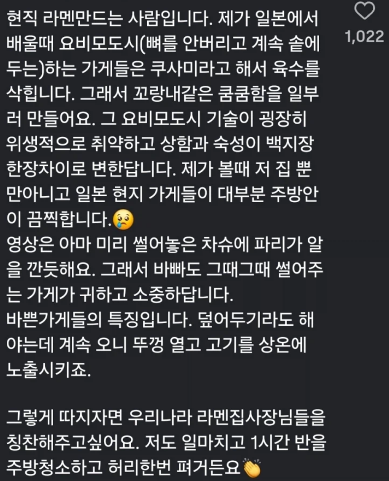
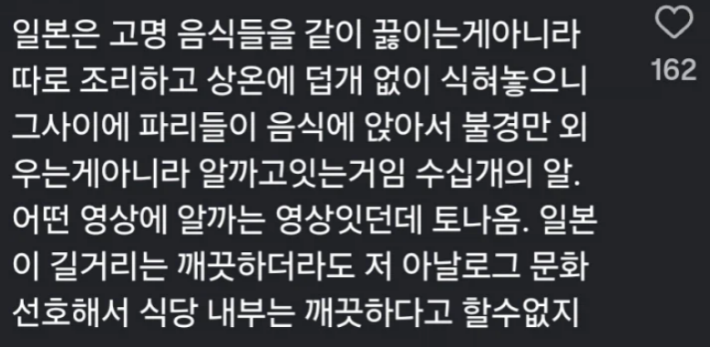

https://bbs.ruliweb.com/best/board/300143/read/77505379


https://bbs.ruliweb.com/best/board/300143/read/77505379


내가 일본 살면서 느낀게 은근 위생 관념이 한국과 다르다는거임
생각보다 위생 좆된 가게도 많고 여기도 사람사는곳이구나 싶더라
린도 다음 릴본
위생이 뭔 중국만도 못함
싱싱하네
저거 뱃속에 들어가면 위벽에 구멍 뚫나?
원래가 동물의 몸 속에 사는 녀석이 아니라면 못뚫지 않을까?
그렇진않음 일반적인 좆더기는 못버팀
걍 단백질임
위산은 생각보다 존나강력함
린도린... 아니 린보린보?
럭키린도 릴본입니다
럭키린도 릴본
럭키린도 장인정신으로 포장!!

일본 영상에서 저런 것 지적하면 오히려 일본애들이 욕하더라
저 가게 사장이 얼마나 노력해서 이렇게 팔아주는데 감사하지 못하냐고 한국인 인성 수준이 낮다고 조롱함
허리 다 굽은 일본 할매가 씨육수마냥 시커멓게 산폐되어서 연기 풀풀 나는 기름에 돈까스 튀겨도
라드라서 색이 검다, 색깔과 산폐도는 전혀 상관없고 위생에 문제 없다고 개소리 씨부림 ㅋㅋㅋ
뭔가 관점이 다른듯. 뭐... 노포같은데서 할배가 비실비실거리면서 저렴하게 음식 파는거 대단하긴 하지만 그 음식 처먹는건 지들인데 식중독으로 실려가도 괜찮은가 의문임.
마치 돈 안받고 공짜로 처먹기라도 하는것마냥...
일본이 외식이 대형 사고 진짜 잦음 ㅇㅇ
2011년 야키니쿠 체인점에서 O-111로 인한 집단 식중독이 생겨서 일본에서 소고기 육회 판매 금지되었는데 사건이 존나 골때림
육가공업체는 생간이랑 고기랑 도마, 칼 같이 쓰고 보관도 비좁은 냉장고에 꽉꽉 채워서 교차오염 일으키고, 폐사한 소에서 나온 고기를 생식용이라고 팔아치우고
야키니쿠 집은 상온에 보관되어서 팔다남은 고기 다시 냉장고에 넣고 다시 팔고 ㅋㅋㅋㅋ
진짜 위생점검이라는게 존재하지 않는것인가...
일본스럽네
와 공짜 단백질
요즘 럭키릴본이잖아 ㅋㅋㅋㅋㅋㅋㅋㅋㅋ
저게 파리 구데기라고?
저렇게 안생겼을텐데? 날벌레중에 새끼가 저런모양인게 있나?
오히려 회충같이 생겼는데
초파리 유충 저렇게 생김
내가 잘못봤나보다
좀더 길쭉하게 보였는데 다시보니까 좀 짧네

꼬소하이
보여지는곳과안보이는곳
일본이 럭키인도임 음식점 다 존나더러움
일본에서 100년넘은 돈까스집이라고해서 가봤는데 너무 더러워서 깜짝 놀란 기억이 ㅡ.ㅡ;;; 요즘 신생가게들은 깨끗한곳도 많은데 일본식품위생검사를 하는지 의심이 되기는 해. 한국은 그런식으로 했다가는 바로 영업정지일텐데
???: 럭키린도 릴본입니다
파리가 불경 왼다는 표현이 왤케 웃기냨ㅋㅋㅋㅋㅋㅋㅋ
여기 단백질 추가요 ㅎㅎ
릴본 릴본 릴본~
저 염도에서 좋다고 수영중이네 ㅅㅂ ㅋㅋㅋㅋ 일본은 벌래도 인자강이네